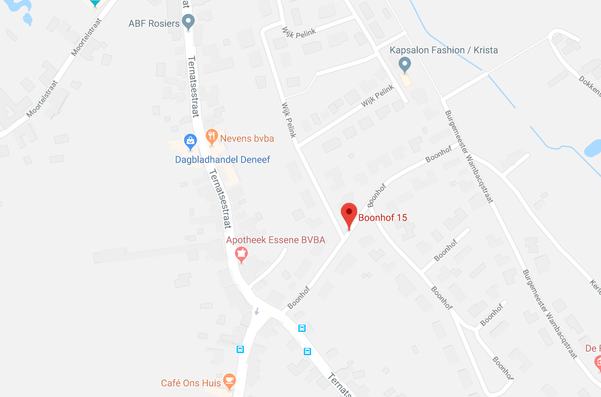

About Welness
On the face of it, wellness is a pretty simple concept – it’s about feeling good and functioning well. But dig a little deeper and most people discover that it’s a bit more complicated. On the one hand, wellness is more than the absence of illness. On the other hand, a person can be ill – even dying – and still experience a sense of well-being. Wellness is about strong bodies and minds, open hearts, and soaring spirits. It’s about finding balance. But life doesn’t standstill for anyone – our lives and the world around us is constantly changing. Wellness is about being able to adapt in positive ways to change, bounce back from challenges and overcome obstacles put in our path. Not all people have the same chances or choices in life to be well; and not all people have the same opportunities to participate fully in the social, economic and political life of the community in which they live. We invite you to learn more about wellness and reflect on the things you do to support well-being for yourself, your family and friends, and your community.
Yoga sesie
The word ‘yoga’ is derived from Sanskrit and means ‘to join’/to unite’. Yoga exercises have a physical effect and bring a balance between body, soul and mind. Yoga helps us to deal with our problems, worries and everyday demands. It also influences us to understand ourselves, the purpose of life and develops our relationship with God. Yoga leads a spiritual path to knowledge and eternal bliss in the union of eternal self with universal self. Yoga is that supreme and infinite principle. Yoga is that ray of life that is universal cognizant that is awake. Many years ago, sages analyzed nature and cosmos through meditation. They explored the principles of the material and spiritual branch, the laws of nature, energy-that works in external as well as spiritual level..

Adress
Boonhof 15
1790 Affligem
Afspraak maken
Erika.lauwers@hotmail.com
0479/ 11 42 99